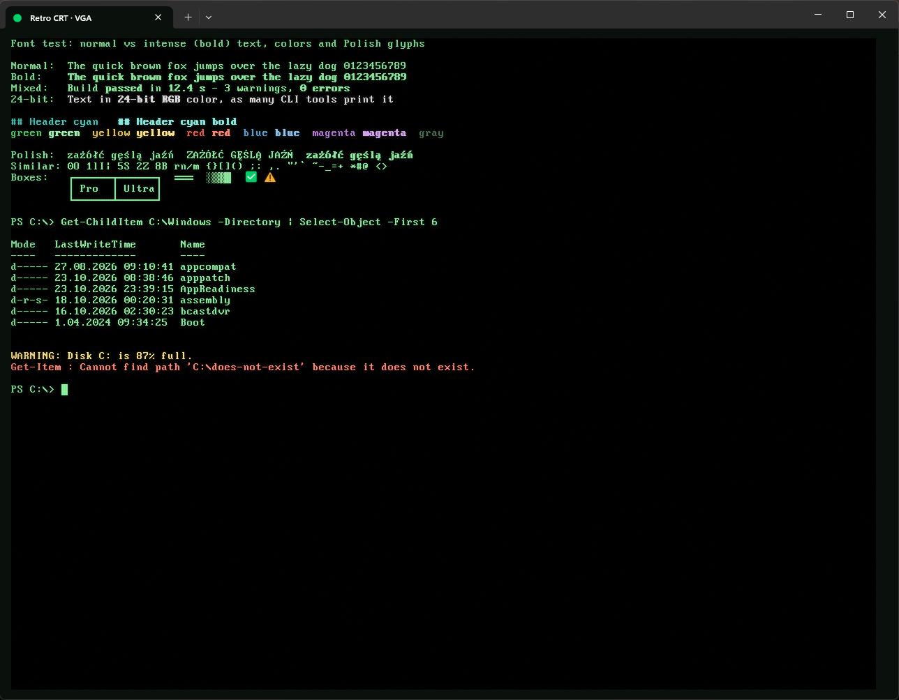

everydayna co dzień
Retro CRT · VGA
PxPlus IBM VGA 9x16, the original IBM VGA text mode font, pixel-perfect at 12 pt. Faint scanlines and phosphor glow. The most faithful DOS look.
PxPlus IBM VGA 9x16, oryginalna czcionka trybu tekstowego IBM VGA, piksel w piksel przy 12 pt. Delikatne linie skanowania i poświata luminoforu. Najwierniejszy wygląd DOS-a.